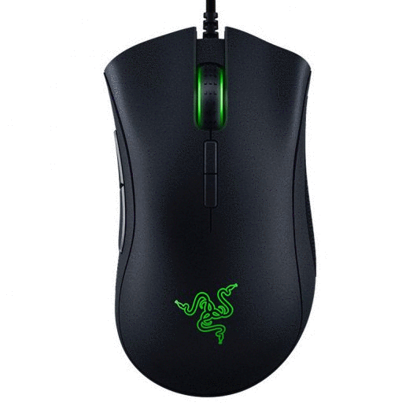
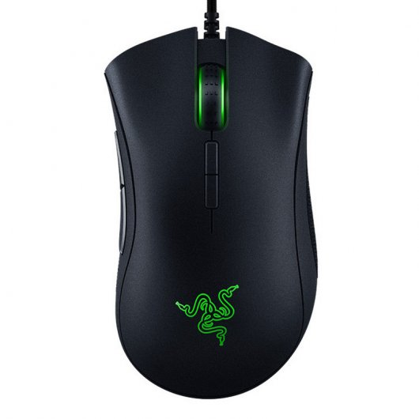
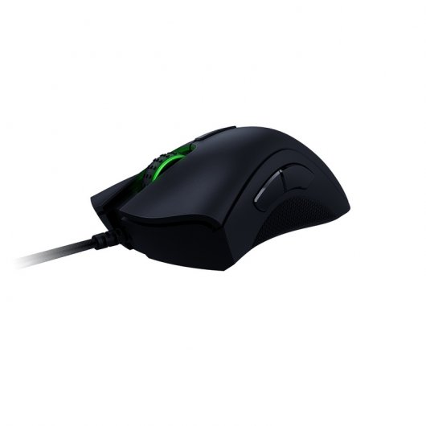
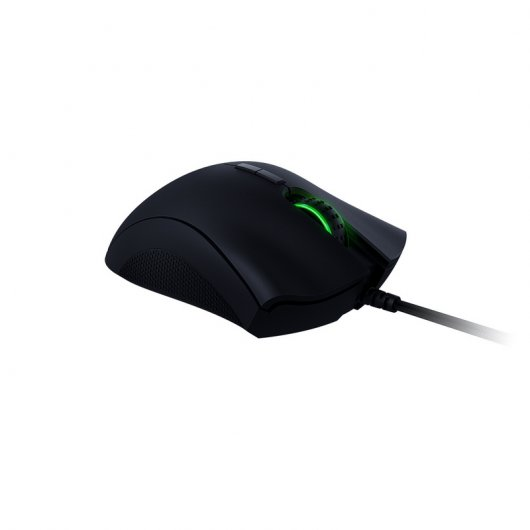
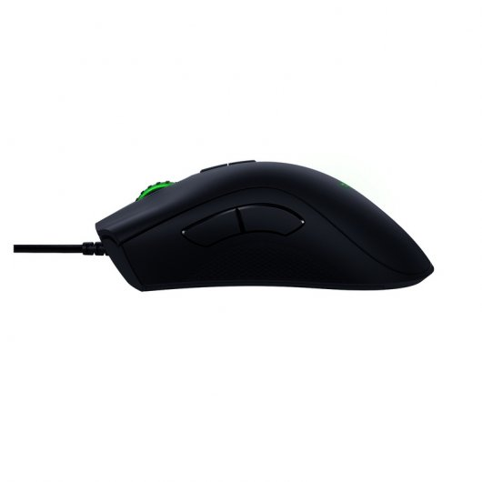

FUTURETECH STORE |
|      |
Razer Deathadder Elite
69,99€
Te presentamos el Razer DeathAdder Elite, un excelente ratón gaming de gran calidad, como todos los periféricos Racer, y un cuidado y aguerrido diseño con el que masacrar a tus enemigos con la mejor herramienta.
Características
EL SENSOR ÓPTICO MÁS AVANZADO DEL MUNDO: Equipado con el nuevo sensor óptico para eSports que ofrece 16.000 ppp reales y una capacidad de rastreo de 450 pulgadas por segundo (IPS), el Razer DeathAdder Elite te da la ventaja definitiva al disponer del sensor más rápido del mercado. Diseñado para redefinir los estándares de velocidad y precisión, este increíble sensor de ratón deja muy atrás a la competencia con una exactitud de resolución del 99,4%. De esta manera, podrás disparar y acabar con los enemigos con una puntería fantástica.
SWITCHES MECÁNICOS RAZER™ OPTIMIZADOS PARA EL JUEGO: Diseñados para darte una ventaja definitiva en las acciones de juego más intensas, el ratón Razer DeathAdder Elite incorpora los nuevos switches mecánicos Razer™. Diseñado y producido de forma conjunta con Omron, el fabricante líder de switches para ratones, estos nuevos switches están ajustados y optimizados para proporcionar tiempos de respuesta más rápidos y una durabilidad extendida de hasta 50 millones de clics.
FORMATO ERGONÓMICO PERFECCIONADO PARA LOS ATLETAS eSPORTS: Razer DeathAdder Elite tiene un excepcional ergonomía que los principales atletas de eSports han comprobado de primera mano. Mantendrás una comodidad increíble incluso durante las batallas más largas e intensas. Junto con los dos agarres laterales de goma, tendrás completo control de tus acciones de juego en todo momento.
Especificaciones
Sensor óptico de 16.000 ppp reales
Hasta 450 IPS /50 g de aceleración
Switches mecánicos Razer para ratón
Diseño ergonómico para diestros con agarres laterales de goma texturizada
Rueda de desplazamiento táctil especial para juegos
7 botones Hyperesponse programables de forma independiente
Iluminación Razer Chroma™ con 16,8 millones de opciones de color personalizables
Preparado para Razer Synapse
Ultrapolling de 1.000 Hz
Ajuste de sensibilidad instantáneo
Conector USB dorado
Cable de 2 m (siete pies) de longitud, ligero, de fibra trenzada
Tamaño aproximado: 127 mm / 5 ” (longitud) x 70 mm / 2.76 ” (ancho) x 44 mm / 1.73 ” (altura)
Peso aproximado: 105 g / 0,23 lb
|


{kind=link}
{kind=link}
{kind=link}
{kind=link}